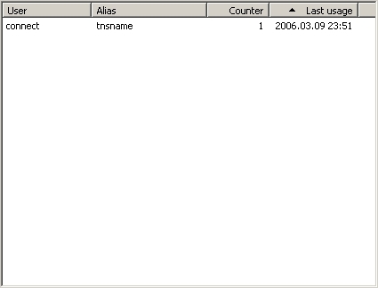

Connection list

You can choose a connection to open from saved connections. Press on
the header bar for sorting by any column.
User : name of the user to connect.
Alias : alias of the connection. It's the
tns name or host name.
Counter : number of times that you used this
connection.
Last Usage : date of your last connection.